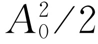
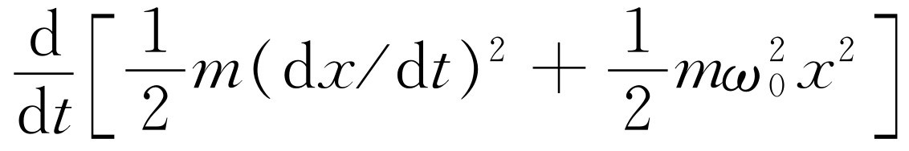
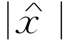

第24章 瞬变态
§24-1 振子的能量
虽然本章的题目是“瞬变态”，但是从某种角度来看，本章的某些部分是上一章受迫振动的继续。受迫振动的特点之一是振动的能量 ，对此我们还没有讨论过。现在就来考虑这个问题。
一个机械振子的动能有多大？它与速度的平方成正比。现在我们谈到了一个重要问题。试考虑一个任意量A ，它既可以是速度，也可以是我们要讨论的其他东西。当我们把A 写成一个复数 时，在物理世界中具有真实意义的A 只是它的实部；因此，如果为了某种原因，我们要用A 的平方 时，把复数平方，然后取实部是不对的，因为一个复数平方的实部并不正好等于实部的平方，还包含有虚部 。因此，当我们想要求出能量时，我们得暂时丢开复数表示，先去看看它的实在内容是什么。
真实的物理量A
是A
0
ei（
ωt
+
Δ
）
的实部，即A
=A
0
cos（ωt
+Δ），这里复数 可写成A
0
ei
Δ
。现在，这个真实的物理量的平方是
。因此，这个量的平方像余弦的平方一样，在最大值和零之间来回变化。余弦平方的最大值是1，最小值是0，它的平均值是1/2。
可写成A
0
ei
Δ
。现在，这个真实的物理量的平方是
。因此，这个量的平方像余弦的平方一样，在最大值和零之间来回变化。余弦平方的最大值是1，最小值是0，它的平均值是1/2。
在很多情况下，我们并不对振动过程中任何特定时刻的能量感兴趣。在大量的应用中，我们只需要A
2
的平均值——即在一段比振动周期大得多的时间内A
平方的平均值
。在这些情况下，可用余弦平方的平均值，因此，我们有如下的定理：如果用一个复数表示A
，那么A
2
的平均值等于
。这里
是复数 的模的平方（它可以写成很多形式——有些人喜欢写
；也有些人写
*，即
乘它的共轭复数）。我们将要多次用到这个定理。
的模的平方（它可以写成很多形式——有些人喜欢写
；也有些人写
*，即
乘它的共轭复数）。我们将要多次用到这个定理。
现在来考虑受迫振子的能量。受迫振子的方程是
在我们的问题中，当然，F （t ）是t 的余弦函数。现在我们来分析一下这个问题：外力F 做了多少功？每秒钟外力做的功，即功率，等于力乘速度（我们知道在时间dt 内的元功是F dx ，功率是F dx /dt ），即
但是，等式右端的前两项也可写成 ，只要对此式微分一下就能立即证实。也就是说，在方括号里的表示式是另外容易理解的两项之和的微商——一项是运动的动能，另一项是弹簧的势能。我们把这个量称为储能 ，即贮藏在振动中的能量。假如振子作受迫振动，并已运动了很长时间后，我们要求多次振动的平均功率。从长时间来看，储能不变——对它微商后得出的平均效果是零。换句话说，如果我们求功率的长时间平均值，则所有能量最终将被阻尼项γm （dx /dt ）2 全部吸收 。确定有些 能量贮存在振动中，但是如果对多次振动取平均，它不随时间而变化。因此，平均功率〈P〉是
〈P 〉=〈γm （dx /dt ）2 〉.（24.3）
用写成复数的方法和定理 ，我们可以求出这个平均功率。如果 ，那么 。因此，在这些情况中，平均功率可以写成
在电路的符号中，dx /dt 被电流I （I 是dq /dt ，这里q 对应于x ）所代替，而mγ 则对应于电阻R 。因此，能量耗损率——强迫力函数消耗的功率——是电路中的电阻乘电流平方的平均值
当然，这个能量使电阻变热；它有时被称为热耗损或焦耳热。
另一个需要讨论的有意义的特点是贮存 了多少能量。这与功率不同，因为虽然在开始时要用功率贮存一些能量，但是在这以后系统只在所具有的热耗损（电阻）的限度内继续吸收功率。在任何时刻，都有一定量的贮能，因此我们想计算一下平均贮能〈E 〉。我们已经计算出（dx /dt ）2 的平均值，因此得出
当一个振子非常有效，而且ω 接近ω 0 时，则 很大，贮能就很高——我们能从一个比较小的力得到较大的储能。力在引起振动时做了大量功，但此后为了保持振动稳定，它所要做的一切就只是克服摩擦力。如果摩擦力很小，振子可以具有很大的能量，即使振动很强，能量的损失也很少。一个振子的效率可以由所贮存的能量与每振动一次力所做的功相比较来量度。
储能怎样与每振动一周力所做的功相比较呢？这称为系统的Q值，Q值的定义是2π 乘平均储能，再除以每周所做的功（如果用的是每弧度 所做的功，而不是每周做的功，那就没有2π ）
除非Q 很大，否则它不是一个十分有用的数。当Q 比较大时，它可以作为表征振子好坏的一种量度。人们企图用最简单和最有用的方式来定义Q ；不同的定义之间略有差异，但当Q 很大时，所有的定义都趋于一致。最普遍采用的定义是式（24.7），它与ω 有关。对于一个好的接近共振的振子，可令ω =ω 0 ，而使式（24.7）再简化一些，于是可得Q =ω 0 /γ ，这正是我们以前所用的Q 的定义。
什么是电路的Q 值呢？要求出它，我们只需把m ，mγ 和 分别换成L ，R 和1/C （见表23-1）。在共振时，Q 是Lω/R ，这里ω 是共振频率。如果我们考虑一个具有高Q 值的电路，这意味着在振动中所贮存的能量比起每振动一周驱使振动的机械所做的功的数量大得多。
§24-2 阻尼振动
现在我们回到讨论的主题：瞬变态，瞬变态 是指当没有作用力存在，且系统不是简单地处于静止时，微分方程的一个解（当然，如果没有力的作用，又静止于原点时，那就再好没有了——它就停止在那里）。假设振动以另一种方式开始：比如说，它被力驱动了一会儿，然后把力去掉，那么会发生什么情况呢？让我们首先对一个Q 值很高的系统将发生什么情况得出一个大致的看法。只要有力在作用，储能就保持不变，就有一定量的功来维持它不变。现在假定去掉力，就不会再做更多的功，这时再也没有额外的能量供消耗——驱动者不复存在。这时可以说损耗就得消耗所贮存的能量。假设Q /（2π ）=1 000，那么每周所做的功就是储能的1/1 000。由于这是没有策动力的振动，因而系统振动一周时将消耗它的能量E 的千分之一，这个能量通常是由外界提供的，并且在它继续振动时，每周总是消耗它的能量的1/1 000，这难道是不合理的吗？所以，可以猜测，对于Q 值相当高的系统，可以假定下面的方程大体上是正确的（以后我们将要严格证明它是正确的）
说它大体上正确是因为它只适用于大的Q 值。每经过一个弧度，系统就损失储能E 的1/Q 。这样，在给定的时间dt 内，能量将改变ω dt /Q 数量，因为在dt 时间内改变的弧度数是ω dt 。什么是频率呢？我们假定系统在几乎没有力作用时运动得很好，如果让它自己运动下去，它将基本上按自身同样的频率振动。因而我们可以推测ω 就是共振频率ω 0 。这样，从式（24.8），就可推出储能将按
变化。这将是任何时刻的能量 的量度。对于作为时间函数的振幅，公式将大致如何呢？完全一样吗？不会！比方说，弹簧上位能的大小随位移的平方 而变化；动能则随速度的平方 而变化；因此，总能量按位移的平方 而变化。因而，由于平方关系，位移，即振幅减小的速率只有能量减小的速率的一半。换句话说，我们猜测阻尼瞬变运动的解将是频率接近于共振频率ω0 的振动，其中正弦波运动的振幅将按e-γt /2 衰减
x =A 0 e-γt /2 cos ω 0 t .（24.10）
这个等式和图24-1表达了我们所预期的一些想法，现在我们打算通过解运动微分方程本身来精确地分析这种运动。
那么，从式（24.1）出发，在不存在外力时，如何解这个方程呢？作为物理学家，我们对解题方法 并不像对求出的解大致是什么样子那样操心。根据前面的经验，我们把指数曲线x =A ei αt 作为一个试解（为什么要这样试呢？因为这最容易微分），把它代入式（24.1）［其中F （t ）=0］并用x 对t 每微分一次，就是乘上一个iα 的规则。因而这种代换确实是很简单的。这样我们的公式就变成
要使上式的结果在任何时候 都等于0，则除非（a）A =0，但这根本不是解——因为它静止不动；或（b）
否则，式（24.11）就不能满足。假如能解此式，并求出α ，我们将得到一个A 不必为零的解
我们暂且假设γ 与ω 0 相比极其小，所以 肯定是正值，求它的平方根是不会有问题的。麻烦的事情在于我们得到了两个解，即
和
假定我们没有注意到平方根有两个可能值，而来考虑第一个解。我们知道对于x 的一个解是 ，这里A 是任意常数。现在，将α 1 代入，因为出现的次数很多，写起来又很长，所以我们令 。这样， ，我们就得到 ，因为指数具有奇妙的性质，所以此式还可写成
首先，我们看出这是一个振动，振动频率是ω γ ，并非正好等于频率ω 0 ，但如果它是一个良好的系统，ω γ 可以相当接近于ω 0 。其次，振动的振幅按指数衰减！举例说，如果我们取式（24.16）的实部，就有
x 1 =Ae-γt /2 cos ω γ t .（24.17）
这非常像我们推测的解式（24.10），只是频率实际上是ω γ ，这是唯一的误差。因此，可以说是同一回事——我们的概念是正确的。但是并非 所有的东西全部都正确！不对的地方是还存在另外一个解 。
另一个解是α 2 ，我们看到它与α 1 的差别仅仅在于ω γ 的符号相反
这是什么意思呢？我们可以很快证明，如果x 1 和x 2 都是F =0时方程式（24.1）的一个可能解，那么，x 1 +x 2 也是同一方程的解！所以x 的通解的数学形式是
我们可能会感到奇怪，既然我们对得到的第一个解很满意，为什么还要给出另一个解。因为我们当然知道应当只取实部，那么这个多余的解到底是作什么用呢？我们知道应该取实部，但是利用数学方程怎么能够知道我们只需要实部呢？当策动力F （t ）不为零时，我们就加上一个人为的 力与之相匹配，而使方程的虚部以一种确定的方式被利用。但是，当今F （t ）≡0时，我们关于x 应当只取某个量的实部这一规定纯粹是自己的事，而利用数学方程并不知道这一点。物理世界有一个实数解，但是我们以前那么满意的答案却不是实数，而是复数 。利用数学方程并不知道我们要任意地取实部，因此可以说，它总是要向我们提供一个复数共轭型的解，这样把这两个解放在一起，我们能够构成一个真正的实数解 ；这就是α 2 对我们的用处。为了使x 成为实数 必将是 的共轭复数，以便使虚部消失。因此，结果表明B 是A 的共轭复数，而实数解为
所以，正如前面所说的，我们的实数解是一个具有相移 和阻尼的振动。
§24-3 电瞬变态
现在我们来看一看上述分析是否真正成立。我们构成一个如图24-2所示的电路，在此电路中，我们通过闭合开关S ，突然接通电源后，将电感L 两端的电压加到示波器上。它是一个振荡电路，并产生某种类型的瞬变态。这相当于我们突然在某个系统上加上一个力，而使它开始振动的情况。这一电学情况与阻尼机械振子相类似，我们可在示波器上观察这个振荡，在那里可以看到所要分析的曲线（示波器的水平运动是以均匀速度驱动的，竖直运动由电感两端的电压控制。电路的其他部分仅是技术细节。因为视觉的住留不足以看清屏幕上的唯一的一条径迹，所以我们要多次重复这个实验。因此，我们每秒钟闭合开关60次来一再重复这个实验；每次闭合开关时，也就开始了示波器的水平扫描，于是就一遍又一遍地画出曲线）。在图24-3到24-6中，我们看到的是阻尼振荡的几个例子，这些图是从示波器屏幕上实际拍摄下来的。图24-3所示的是在一个Q 值很高，γ 很小的电路上的阻尼振荡。它消失得不很快，并且在衰减过程中振荡了好多次。
图24-2 演示瞬变态的电路
图24-3
现在我们来看看当Q 值减小，使振荡较快消失时将发生什么情况。增加电路中的电阻R 就能减小Q 值。当我们增加电路中的电阻时，它就消失得较快（图24-4）。当电路中的电阻增加得更多时，它就消失得更快（图24-5）。但当电阻增加到超过某一个数值时，我们就根本看不到任何振荡了！问题在哪里呢？是不是因为我们的眼睛不够好？如果我们再继续增大电阻，就得出一条像图24-6所示的曲线，除了可能有一次之外，在这根曲线上根本看不出有任何振荡。那么如何用数学来解释这种现象呢？
图24-4
图24-5
图24-6
电阻当然与力学装置中的γ 项成正比。明确地说，γ 就是R /L 。如果在我们以前认为满意的解（24.14）和（24.15）中，使γ 增大，那么当γ /2大于ω 0 时，将会出现混乱，我们必须把它写成另一种形式，如
这就是现在的两个解，按照上述同样的数学推理过程，我们又得出两个解 和 。如果现在把α 1 代入，就有
这是一个无振荡的有规则的指数衰减。同样，另一个解是
注意，平方根不能超过γ /2，因为即使ω 0 =0，平方根也只不过刚好等于γ /2。现在要从γ 2 /4中减去 ，因此平方根小于γ /2，所以括号里的项总是正数。为什么？因为如果它是负值，我们将得到e的指数是一个正因子乘t ，这意味着要发生爆炸！在电路中逐步增大电阻时，我们知道，不会发生爆炸——而是正好相反。因此，我们现在有两个解，每一个本身都作指数衰减，不过一个的“衰减率”比另一个快得多。当然，通解是这两个解的组合，组合系数由运动是如何开始——即问题的初始条件而定。如果在一个特殊的条件下接通电路，使A 为负值，B 为正值，那么我们就得到这两个指数曲线的差。
现在我们来讨论，在知道了运动的初始状态后，如何求出这两个系数A 和B （或A 和A * ）。
设在t =0时，已知x =x 0 和dx /dt =v 0 。若我们在表示式
中令t =0，x =x 0 和dx /dt =v 0 ，因为e0 =ei0 =1，得
x 0 =A +A * =2A R ，
v 0 =（-γ /2）（A +A * ）+iω γ （A -A * ）=-γx 0 /2+iω γ （2iA I ），
这里A =A R -iA I ，而A * =A R +iA I ，因此得到
A R =x 0 /2
和
A I =-（v 0 +γx 0 /2）/2ω γ .（24.21）
这完全确定了A 和A * 。因此，根据它是如何开始的，就完全确定了瞬变态解的整根曲线。附带说一下，如果注意到
ei θ +e-i θ =2ωθ s 和 ei θ -e-i θ =2isin θ ，
我们就可以用另一方式写一下这个解。
我们还可以把这个完整的解写成
这里 。这就是振动衰减方式的数学表达式。我们将不直接采用这个表达式，但有几点我们想强调一下，它适用于更一般的情况。
首先，这种没有外力作用的系统的行为可表示为纯时间指数函数（我们写成ei αt ）的和或叠加。在这种情况下，这是一个很好的解。α 的值在一般情况下可以是复数，其虚部表示阻尼。最后，当某个物理参数（在此例中，是阻力γ ）超过某一临界值时，我们在第22章中讨论过的正弦函数和指数函数之间的密切的数学关系，在物理上就表现为从振动到指数行为的变化。